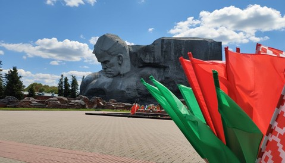
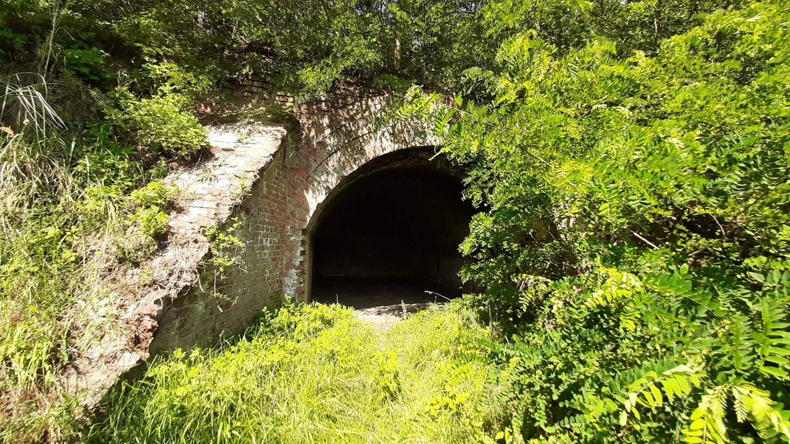
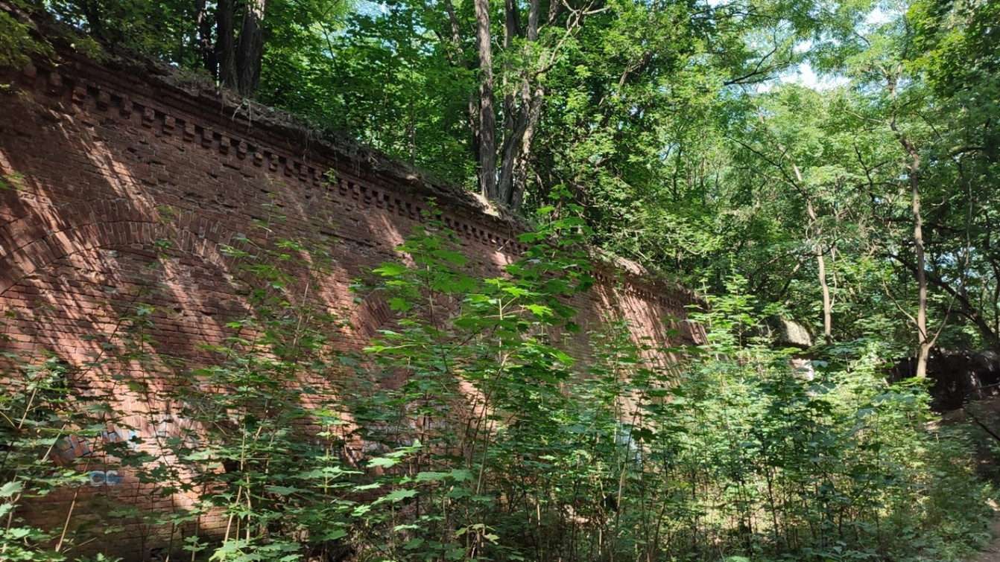
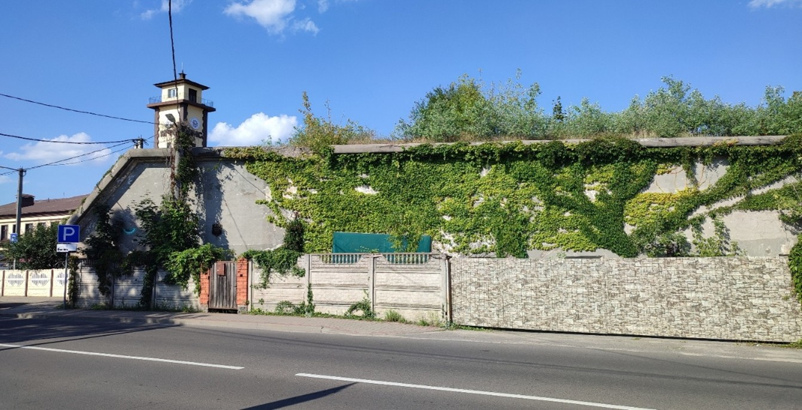
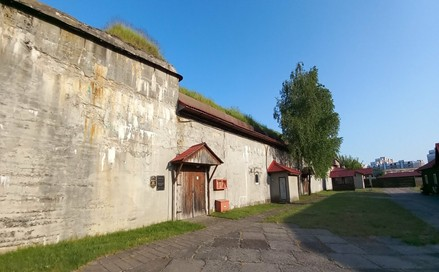
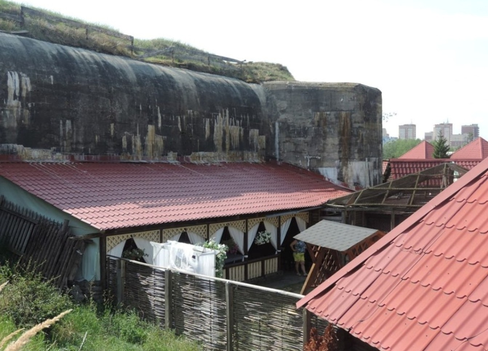
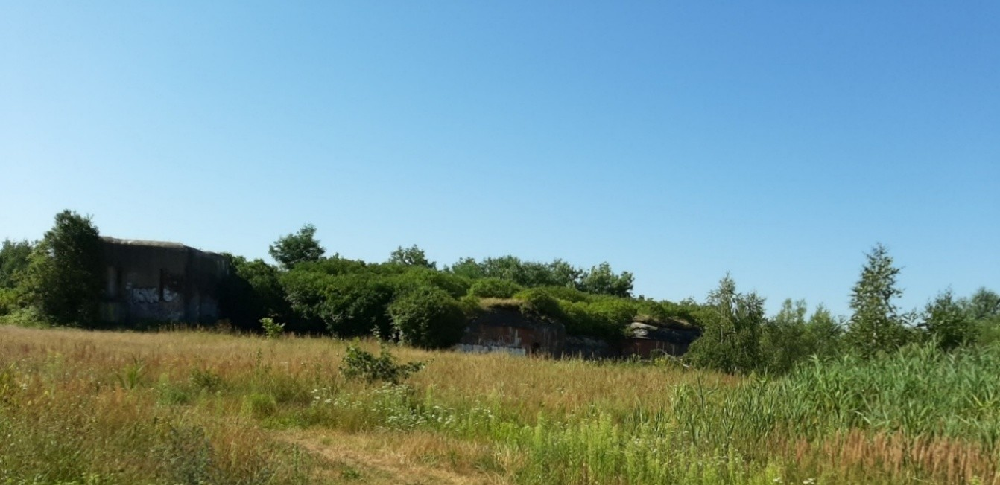
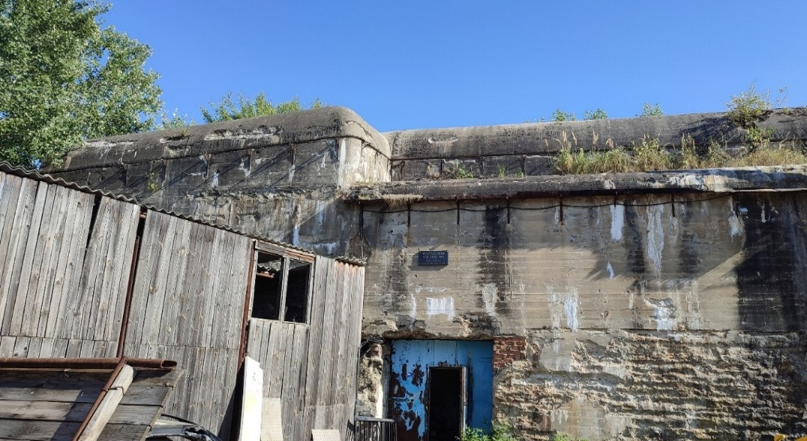
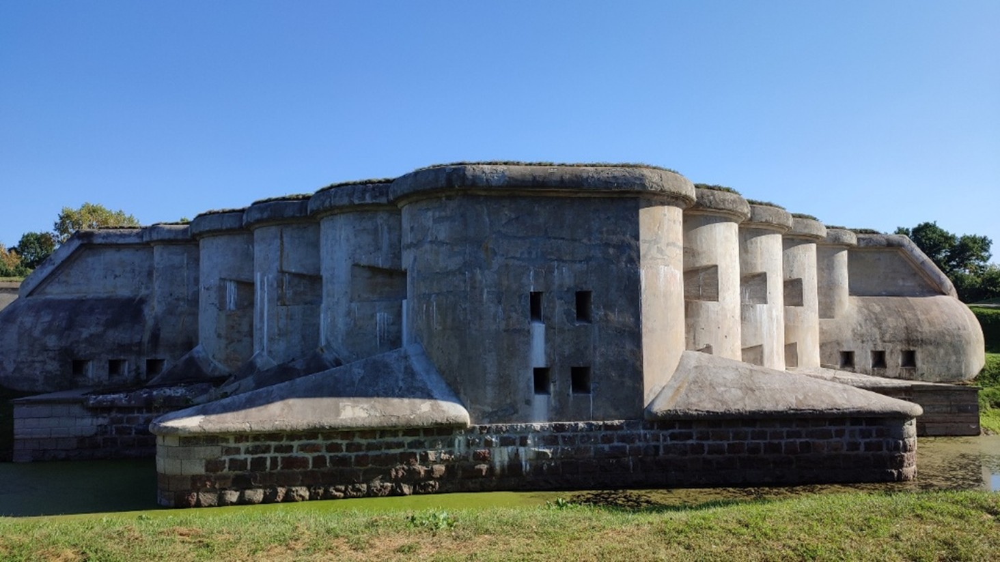

«Брестская фортеция: маршрут за пределами привычного»
Нитка маршрута: Брестская крепость → Форт «Граф Берг» → Артиллерийская батарея №2 → Форт I → Форт «А» → Форт VIII («Б») → Пороховой погреб №2 → Форт IX → Пороховой погреб №3 → Форт «Ж» → Оборонительная казарма «Ж-З» → Пороховой погреб №4 → Форт V.
Продолжительность – с 9.00 до 17.00
Протяженность маршрута – 50,5 км
Транспорт – комфортабельный автобус
Питание – обед в кафе «Таки-Да» (@cafetakida), г. Брест, ул. Луцкая, 3.
Сезонность – круглый год
Целевая группа – учащиеся 7–11 классов
Группа – 15–20 человек
1 - Брестская крепость (площадь Церемониалов)
2 - Форт «Граф Берг»
3 - Артиллерийская батарея №2
4 - Форт I
5 - Форт «А»
6 - Форт VIII («Б»)
7 - Пороховой погреб №2
8 - Форт IX
9 - Пороховой погреб №3
10 - Форт «Ж»
11 - Оборонительная казарма «Ж-З»
12 - Пороховой погреб №4
13 - Форт V
14 - Гостиница «Интурист»
Рисунок 1 – Карта-схема экскурсионного маршрута «Брестская фортеция: маршрут за пределами привычного»
Сбор группы в 9.00 на площади Церемониалов (рисунок 2) в Брестской крепости. Возложение цветов у Вечного огня. Посадка в автобус на автомобильной стоянке Кобринского укрепления.
Рисунок 2 – Площадь Церемониалов, авторское фото, октябрь 2025 г.
Брестская крепость. Крепость была возведена в середине XIX в. на месте древнего городища, на островах, образованных реками Западный Буг и Мухавец, их рукавами и искусственными каналами. Важное военно-стратегическое положение Брест-Литовска на западе России обусловило выбор его местом для строительства крепости. В 1830 г. император Николай I одобрил проект крепости, автором которого являлся инженер-генерал К.И. Опперман. Первый камень крепости был заложен 01.06.1836 г.
В число действующих крепостей Российской империи Брест-Литовская крепость вошла 26.04.1842 г. С 1836 по 1860 гг. – служила базой для размещения пехотных корпусов действующей армии. Крепость была построена в короткий срок, но уже к концу строительства утратила свое стратегическое значение. Прежние укрепления не оправдывали себя. Существующие крепости стали обносить поясом фортов – отдельных укреплений, снабженных артиллерией и гарнизоном и вынесенных на несколько километров за пределы внешнего крепостного вала. В 1857 г. генерал Э.И. Тотлебен предложил модернизировать русские укрепления в соответствии с возросшей мощью артиллерии. В 1864 г. была начата модернизация Брестской крепости. Были укреплены старые сооружения, был усилен земляной вал, построены два пороховых склада; построены Западный и Восточный редюиты – подковообразные укрепления с казематами, траверсы, пороховые погреба.
Форт «Граф Берг». В конце 1860–х гг. севернее крепости проложили железную дорогу «Москва–Варшава», насыпь которой образовала «мертвую зону» перед Кобринским укреплением. Для восстановления контроля над этим участком в 1869–72 гг. был построен форт «Граф Берг» и крупная земляная батарея. Это был первый форт Брестской крепости, находившийся на расстоянии всего 850 метров от главной оборонительной линии. Мощеная дорога связывала форт с Кобринским укреплением через Александровские (Северные, Белостокские) ворота. В 1911–1914 гг. капитан В.М. Догадин занимался возведением в форту здания холодильника (рефрижератора) крепостного типа, рассчитанного для хранения 1650 т мяса и 2 млн порций мясных консервов .
В форту «Граф Берг» накануне II-ой Мировой войны размещался 2-й дивизион 131-го артиллерийского полка. В форту под командованием сержанта Агапова бойцы держались до 18 часов, а потом отступили к деревне Тюхиничи. Группа бойцов находилась здесь до 25 июня.
В послевоенные годы на территории форта разместился Брестский мясокомбинат. Холодильник, построенный капитаном Догадиным, работает до сих пор и имеет современные пристройки.
Артиллерийская батарея №2. Батарея построена в 1912–1915 гг. в 3 км севернее Брестской крепости, на краю Речицкого кладбища, около автодороги «Брест–Клейники». Состоит из трех небольших бетонных сооружений, имеющих с торца вход и по несколько бойниц во фронтальной части, направленных на север.
Форт I (рисунок 3). С 1878 по 1888 гг. вокруг крепости сооружается пояс из девяти кирпично-земляных фортов, расположенных в 3–4 км друг от друга и удаленных от Цитадели на 3–5 км. Каждый из фортов (им присвоили номера от I до IХ) располагал 20 орудиями и гарнизоном численностью до 250 человек и был приспособлен к самостоятельной и долговременной обороне. Форты укреплялись земляными валами. Форты № I, II, III имели сухие рвы, остальные – рвы, заполненные водой .
Рисунок 3 – Форт I, авторское фото, июль 2025 г.
К фортам первой оборонительной линии принадлежит форт I. Форт расположен в районе бывшей деревни Козловичи. Форт представляет собой кирпично-земляную батарею и состоит из двух земляных валов. Ров сухой. Во внутреннем валу встроены десять кирпичных казематов. Один из них – двухэтажный. Здесь отсутствуют некоторые существенные детали – капониры и казарма .
Форт I внесен в Государственный список историко-культурных ценностей Республики Беларусь .
Форт «А» (рисунок 4). Согласно генеральному плану со строительством 2-й линии фортов обвод крепости увеличивался до 45 км и состоял из 14 фортов, 5 оборонительных казарм и 21 опорного пункта. Намечалось строительство 12 новых фортов, которые имели литерное обозначение: А, В, Г, Е, Ж, З, И, К, Л, М, Н, О .
Форт литеры «А», построенный в 1912–1915 гг., находится примерно в 5 км севернее Брестской крепости, около деревни Козловичи. Относится ко второй линии объектов крепости. Материал – бетон, земля. Расположен в 1,5 км северо-западнее форта I. Занимаемая площадь составляет около 10 га. Вместе с фортом I и промежуточными стрелковыми позициями, обнесенные общей проволочной сетью, форт литеры «А» составлял фортовую группу. Между фортами I и «А» сохранилась вымощенная дорога, построенная в начале XX в. .
В июне 1941 г. территория форта входила в участок охраны государственной границы 8-й линейной пограничной заставы 17-го пограничного отряда. Начальник заставы – старший лейтенант М.Н. Серветник. 22 июня 1941 г. застава приняла бой. В живых осталось 15 человек.

Рисунок 4 – Форт «А», авторское фото, июль 2025 г.
Повышения влажности воздуха внутри казематных помещений сформировала особый пещерный микроклимат, благоприятный для зимовки большинства наших видов рукокрылых. На территории форта размещен заказник местного значения «Барбастелла», территория которого является самой крупной в Беларуси массовой зимовкой рукокрылых. Ежегодно, за сезон (ноябрь–март) здесь пребывает свыше 2500 особей рукокрылых 8 видов: широкоушка европейская, ночница Наттерера, ночница прудовая, кожанок северный, ночница водяная, ушан бурый, ушан серый, кожанок поздний .
Форт VIII («Б») (рисунок 5). Во 2-ую оборонительную линию включались и старые номерные форты, которым присваивалось литерное обозначение: VIII («Б»), X («Д»). Пять фортов (с IV по VIII) существующей линии обороны были перестроены и усилены бетоном.
Форт VIII построенный в 1883–1888 гг., расположен примерно в 5 км к северу от Брестской крепости. Пятиугольный в плане форт VIII состоит из окруженного сухими рвами центрального вала, внутри которого располагается основная часть бетонных сооружений. На валу находятся бетонированные стрелковые позиции и казематированные траверсы. Накануне Великой Отечественной войны в форту VIII размещался 1-й батальон 455-го стрелкового полка 42-й стрелковой дивизии. В течение первого дня войны красноармейцы вместе с пограничниками близлежащей заставы отбивали атаки врага, после чего были вынуждены отступить .
Форт VIII внесен в Государственный список историко-культурных ценностей Республики Беларусь .
Рисунок 5 – Стена форта VIII («Б»), авторское фото, июль 2025 г.
Пороховой погреб №2 (рисунок 6). Помимо оборонительных казарм, среди вспомогательных фортовых сооружений оборонительного пояса строились и пороховые погреба. Пороховой погреб – помещение для хранения взрывчатых веществ и боеприпасов. В начале ХХ в. в ходе усиления Брест-Литовской крепости было построено 7 пороховых погребов, из них 5 на территории Бреста. Пороховой погреб № 2 построен в начале ХХ в., находится на расстоянии 3 км на северо-восток от Брестской крепости. Пороховой погреб обеспечивал боеприпасами форт II и форт IX. Представляет собой бетонную постройку прямоугольной формы с амбразурами. Сейчас используется как производственное здание .
(рисунок 6). Помимо оборонительных казарм, среди вспомогательных фортовых сооружений оборонительного пояса строились и пороховые погреба. Пороховой погреб – помещение для хранения взрывчатых веществ и боеприпасов. В начале ХХ в. в ходе усиления Брест-Литовской крепости было построено 7 пороховых погребов, из них 5 на территории Бреста. Пороховой погреб № 2 построен в начале ХХ в., находится на расстоянии 3 км на северо-восток от Брестской крепости. Пороховой погреб обеспечивал боеприпасами форт II и форт IX. Представляет собой бетонную постройку прямоугольной формы с амбразурами. Сейчас используется как производственное здание .
Рисунок 6 – Пороховой погреб №2, авторское фото, июль 2025 г.
Форт IX. Форт построен в 1883–1888 гг. примерно в 3 км на северо-восток от Брестской крепости, недалеко от железнодорожного полотна «Брест–Москва» и деревни Березовка, ныне ставшей микрорайоном города, между фортами II и III. Форт IX входил в число оборонительных объектов Брест-Литовской крепости первой линии обороны. Изначально представлял собой большую казематированную земляную батарею, аналогично сохранившемуся форту I, но рвы форта IX были заполнены водой. Вместе с остальными фортами в северном, восточном и южном секторах при отступлении русских войск он был взорван. Во время оккупации 1941–44 гг. стал местом массовых расстрелов фашистами жителей Бреста.
Сейчас это абсолютно плоский участок земли. От форта сохранился только ров и небольшой участок свода одной из потерн. Сохранились дом постройки 1883–1886 гг., в котором очевидно проживал военный инженер, руководивший постройкой форта. На территории форта расположен дендрарий (агробиостанция) учреждения образования «Брестский государственный университет имени А.С. Пушкина», где растут уникальные растения, территория охраняется .
Пороховой погреб №3 (рисунок 7). Погреб, построенный в начале ХХ в. на расстоянии 3 км восточнее Брестской крепости, обеспечивал боеприпасами форты литеры «Е» и литеры «М». Пороховой погреб одноэтажный. Представляет собой галерею прямоугольной формы, имеет 4 закрытые ставнями амбразуры. До последнего времени использовался как склад, но несколько лет назад на площадке перед ним построили рынок «Старый город», а внутри самого погреба разместили магазины .
Пороховой погреб № 3 внесен в Государственный список историко-культурных ценностей Республики Беларусь .
Рисунок 7 – Пороховой погреб №3, Яндекс Карты.
Обед в кафе «Таки-Да» (@cafetakida) (рисунок 8)
Рисунок 8 –Кафе «Таки-Да», Яндекс Карты
Форт «Ж». Форт построен примерно в 5 км на юго-восток от Брестской крепости. Строительство форта «Ж» под руководством капитана И.О. Белинского началось в 1911 г. и было закончено в 1913 г. В 1914 г. была произведена аэрофотосъемка форта «Ж» с дирижабля.
Взорвали форт в августе 1915 г. при отступлении русской армии.
Во время оккупации 1941–44 гг. стал местом массовых расстрелов фашистами жителей Бреста. В июне 1941 г. в форту было убито 200 человек. На краю форта в 1987 г. поставлен памятник .
Оборонительная казарма «Ж-З» (рисунок 9). Казарма построена в 1912–1914 гг. на расстоянии примерно 4 км к северу от Брестской крепости, недалеко от д. Гершоны, автодороги «Брест–Томашовка» и железной дороги «Брест–Влодава». Оборонительная казарма «Ж-З» входила во внешнюю оборонительную линию Брестской крепости. Казарма «Ж-З» была построена из железобетона .
Оборонительная казарма «Ж–З» внесена в Государственный список историко-культурных ценностей Республики Беларусь .
Рисунок 9 – Оборонительная казарма «Ж-З», авторское фото, июль 2022 г.
Пороховой погреб №4 (рисунок 10). Погреб построен в 1912–1915 гг. на расстоянии 3 км на юго-восток от Брестской крепости, в бывшей деревне Аркадия, у поворота с Ковельского шоссе на V форт. Проектировал пороховой погреб штабс-капитан И.О. Белинский. Пороховой погреб входил в число промежуточных фортификационных объектов Брест-Литовской крепости. Представляет собой галерею прямоугольной формы, имеет четыре закрытые ставнями амбразуры, три входа. Внутри – 8 казематов. Пороховой погреб обеспечивал боеприпасами форты IV и V .
Сейчас используется в качестве магазина-склада строительных материалов, руинированная его часть стала полигоном для самодеятельной (неофициальной) отработки навыков скалолазания.
Пороховой погреб № 4 внесен в Государственный список историко-культурных ценностей Республики Беларусь .
Рисунок 10 – Пороховой погреб №4.», авторское фото, июль 2025 г.
Форт V (рисунок 11). Форт входил в число фортов первой линии обороны. Это наиболее сохранившийся из всех фортов Брестской крепости. Находится в районе деревни Аркадия, в июне 2007 г. вошедшей в черту города Бреста.
22 июня 1941 г. немецкая артиллерия накрыла ураганным огнем не только Брестскую крепость, но и форты, в которых размещались советские воинские части. Подвергся обстрелу и V форт. Накануне Великой Отечественной войны здесь дислоцировался 3-й стрелковый батальон 44-го полка .
По инициативе руководства мемориального комплекса «Брестская крепость-герой» и Брестского облисполкома с 1997 г. предприятиями города Бреста и области были проведены большие реставрационные работы на V форту. В июне 1999 г. форт был передан музею мемориального комплекса «Брестская крепость-герой» и стал его филиалом .
В 1995 г. форт получил статус историко-культурной ценности Республики Беларусь второй категории .
Посещение музея.
Рисунок 11 – V форт, авторское фото, июль 2025 г.
Окончание маршрута –гостиница «Интурист».
| № п/п | Пункты маршрута и расстояния между ними (км) | Время прибытия в пункт и отправления из него |
|---|---|---|
| 1 | Брестская крепость (площадь Церемониалов) → форт «Граф Берг» (4,5 км) | 9:00–9.40 – возложение цветов к Вечному огню, экскурсия по крепости, 9.40–9.50 посадка в микроавтобус, переезд к форту «Граф Берг» |
| 2 | Форт «Граф Берг» → артиллерийская батарея №2 (3,2 км) | 9.50–10.10 – посещение форта 10.10–10.17 – переезд к артиллерийской батарее №2 |
| 3 | Артиллерийская батарея №2 → форт I (0,8 км) | 10.17–10.22 – остановка, рассказ об объекте 10.22–10.25 – переезд к форту I |
| 4 | Форт I → форт «А» (1,2 км) | 10.25–10.45 – посещение форта 10.45–10.50 – переезд к форту «А» |
| 5 | Форт «А» → форт VIII («Б») (6 км) | 10.50–11.20 – посещение форта 11.20–11.34 – переезд к форту VIII («Б») |
| 6 | Форт VIII («Б») → пороховой погреб №2 (5,6 км) | 11.34–11.54 – посещение форта 11.54–12.07 – переезд к пороховому погребу №2 |
| 7 | Пороховой погреб №2 → форт IX (1,5 км) | 12.07–12.12 – остановка, рассказ об объекте 12.12–12.17 – переезд к форту IX |
| 8 | Форт IX → пороховой погреб №3 (5,7 км) | 12.17–12.47 – посещение форта 12.47–13.00 – переезд к пороховому погребу №3 |
| 9 | Пороховой погреб №3 → форт «Ж» (5,6 км) | 13.00–14.00 – обед в кафе «Таки-Да» и посещение порохового погребе №3 14.00–14.13 – переезд к форту «Ж» |
| 10 | Форт «Ж» → оборонительная казарма «Ж-З» (2,8 км) | 14.13–14.28 – посещение форта 14.28–14.35 – переезд к оборонительной казарме «Ж-З» |
| 11 | Оборонительная казарма «Ж-З» → пороховой погреб №4 (4,3 км) | 14.35–14.50 – посещение оборонительной казармы 14.50–15.00 – переезд к пороховому погребу №4 |
| 12 | Пороховой погреб №4 → форт V (1,8 км) | 15.00–15.10 – посещение порохового погреба №4 15.10–15.15 – переезд к форту V |
| 13 | Форт V → гостиница «Интурист» (7,5 км) | 15.15–16.45 – посещение форта 16.45–17.00 – переезд к конечному пункту |